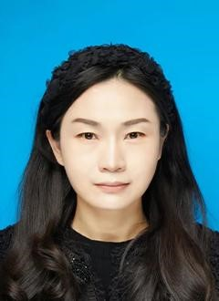

李丽华 - 简介

李丽华，郑州工程技术学院社科办公室主任，副教授
学术论文:- 李丽华. 新媒体语境下黄河流域非物质文化[J]. 莲池周刊, 2023.
- 李丽华. 全媒体环境下传媒与艺术教育理论实践探究[J]. 人民长江, 2020. (全国中文核心)
- 李丽华. 《公民凯恩》的叙事视角与主题解读[J]. 电影文学, 2014. (全国中文核心)
- 新媒体时代文化传播视域下艺术设计与美术研究. 吉林科学科技大学出版社, 2020. (第一著者)
- 影视艺术及其要素研究. 吉林大学出版社, 2014. (第三主编)
- 科技厅软科学（省级项目）：创新战略驱动下河南民俗文创产业科技赋能研究, 2023.
- 2023年度郑州兴文化工程文化研究项目：中华优秀传统文化传承弘扬对策研究, 2024.
- 2021年河南省高等教育教学改革研究与实践项目（本科高等教育类）省级项目：《应用型本科院校艺术设计类专业政产学研协同育人模式研究与实践》, 2024.
- 郑州市科技局基础研究和应用研究项目：《创新战略语境下黄河流域非物质文化遗产传承与传播研究》, 2021.
- 教育厅人文项目: 《新媒体语境下黄河流域非物质文化遗产传承与传播路径研究》, 2024.
- 河南省科技厅项目：媒介融合背景下河南文化传播力提升问题及对策研究, 2021.
- 郑州市社科联项目：数字媒体艺术产业与华夏文明传承中心建设研究, 2020.
- 河南省社科联：《河南省文化产业创意研究》, 2018.
- 河南省高校工委、教育厅河南省高校廉政文化建设：论文《微媒体环境下高校廉政文化传播路径探析》, 厅级二等奖, 2019.
- 河南省美协主办的“幻境”首届郑州艺术设计作品展：动画短片《领悟》入选, 2017.
- 河南省美术家协会主办的“河南省高等学校第四届Wcome创意绘画大赛”设计作品《梦之树》, 省级三等奖, 2013.
- 全国十二五教育部课题美育专项课题组中国高等教育学会美育专业委员会举办“绚丽年华第六届全国美育成果展”：作品《梦里山水貌》, 教师组一等奖, 2013.
- 全国十二五教育部课题美育专项课题组中国高等教育学会美育专业委员会举办“绚丽年华第六届全国美育成果展”：论文《从主动作业的美育思想到项目化教学模式改革》, 教研成果二等奖, 2013.
- 中国好创意（第十七届）暨全国数字艺术设计大赛专项赛道阿凡达主题电影艺术海报设计大赛国赛平面组优秀奖指导教师, 2023.
- 郑州市社科工作先进个人, 2023.
- 河南省第二十七届教育教学信息化交流活动(高等教育组)：微课获得一等奖, 2023.
- 河南省高校科研管理先进工作者, 2022.